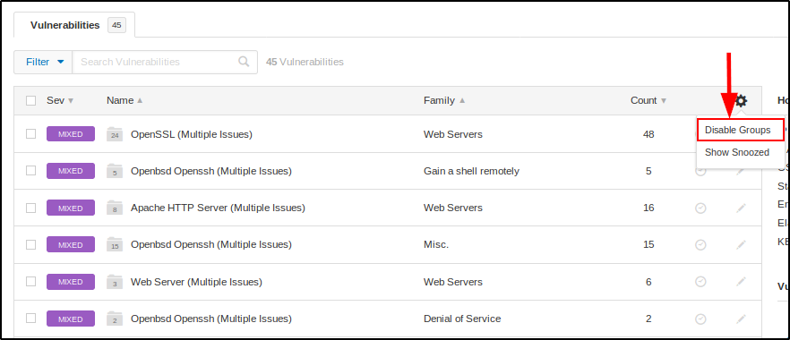
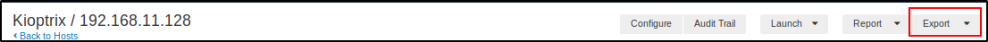

Scanning with Nessus - Part 2
Let's see more abour Nessus results:
Better get started with “Disable Groups”


This is how the results will look like with Disabled Groups:


Better show an example of Vulnerability:


You can export your results too, in an Excel way or Nessus DB Way:

